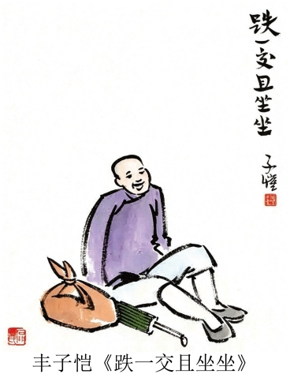

练习 · 散文阅读
癞六伯
癞六伯，丰子恺。
导读
作者与文体：丰子恺；记叙性散文。
材料来源：浙江模拟题，具体考试年份待核；选文有删改。
内容脉络：文本一·日常生活：癞六伯独自耕作，卖货后在酒店喝酒；桥头骂人：癞六伯酒后发泄，乡邻熟悉这一习惯；乡间做客：他热情招待“我”，临别仍盼再次见面；文本二·艺术主张：丰子恺论述艺术的内容与形式。
阅读重点：追踪细节、叙述与人物情感之间的联系，区分原文陈述和有条件的推断。
原文与随文研读
原文按结构分节；随文内容可定位至对应段落。
文本一·日常生活：癞六伯独自耕作，卖货后在酒店喝酒。
癞六伯，是离石门湾五六里的六塔村里的一个农民。这六塔村很小，一共不过十几户人家，癞六伯是其中之一。我童年时候，看见他五十多岁的样子，身材瘦小，头上有许多癞疮疤。因此人都叫他癞六伯。此人姓甚名谁，一向不传，也没有人去请教他。只知道他家中只有他一人，并无家属。既然称为“六伯”，他上面一定还有五个兄或姐，但也一向不传。总之，癞六伯是孑然一身。
癞六伯孑然一身，自耕自食，自得其乐。他每日早上挽了一只篮步行上街，走到木场桥边，先到我家找奶奶，即我母亲。①“奶奶，这几个鸡蛋是新鲜的，两支笋今天早上才掘起来，也很新鲜。”我母亲很欢迎他的东西，因为的确都很新鲜。但他不肯讨价，总说“随你给吧”。我母亲为难，叫店里的人代为定价。店里人说多少，癞六伯无不同意。但我母亲总是多给些，不肯欺负这老实人。于是癞六伯道谢而去。他先到街上“做生意”，即卖东西。大约九点钟，他就坐在对河的汤裕和酒店门前的板桌上吃酒了。这汤裕和是一家酱园，但兼卖热酒。门前搭着一个大凉棚，凉棚底下，靠河口，设着好几张板桌。癞六伯就占据了一张，从容不迫地吃时酒。时酒，是一种白色的米酒，酒力不大，不过二十度，远非烧酒可比，价钱也很便宜，但颇能醉人。因为做酒的时候，酒缸底上用砒霜画一个“十”字，酒中含有极少量的砒霜。砒霜少量原是无害而有益的，它能养筋活血，使酒力遍达全身，因此这时酒颇能醉人，但也醒得很快，喝过之后一两个钟头，酒便完全醒了。农民大都爱吃时酒，就为了它价钱便宜，醉得很透，醒得很快。农民都要工作，长醉是不相宜的。我也爱吃这种酒，后来客居杭州上海，常常从故乡买时酒来喝。因为我要写作，宜饮此酒。李太白“但愿长醉不愿醒”，我不愿。
注释 1
关于砒霜的说明
砒霜少量原是无害而有益的原文所述属于旧时认识。砒霜是有毒的无机砷化合物，原文所称“无害而有益”缺乏可靠依据。参见世界卫生组织关于砷的说明。
桥头骂人：癞六伯酒后发泄，乡邻熟悉这一习惯。
且说癞六伯喝酒时，喝到饱和程度，还了酒钱，提着篮子起身回家了。此时他头上的癞疮疤变成通红，走步有些摇摇晃晃。走到桥上，便开始骂人了。他站在桥顶上，指手画脚地骂：“皇帝万万岁，小人日日醉！”“你老子不怕！”“你算有钱？千年田地八百主！”“你老子一条裤子一根绳，皇帝看见让三分！”骂的内容大概就是这些，反复地骂到十来分钟。旁人久已看惯，不当一回事。癞六伯在桥上骂人，似乎是一种自然现象，仿佛鸡啼之类。②我母亲听见了，就对陈妈妈说：“好烧饭了，癞六伯骂过了。”时间大约在十点钟光景，很准确的。
乡间做客：他热情招待“我”，临别仍盼再次见面。
有一次，我到南沈浜亲戚家做客。下午出去散步，走过一座小桥，一只狗气势汹汹地赶过来。我大吃一惊，想拾石子来抵抗，忽然一个人从屋后走出来，把狗赶走了。一看，这人正是癞六伯，这里原来是六塔村了。这屋子便是癞六伯的家。他邀我进去坐，一面告诉我：“这狗不怕。叫狗勿咬，咬狗勿叫。”③我走进他家，看见环堵萧然，一床、一桌、两条板凳、一只行灶之外，别无长物。墙上有一个搁板，堆着许多东西，碗盏、茶壶、罐头，连衣服也堆在那里。他要在行灶上烧茶给我吃，我阻止了。他就向搁板上的罐头里摸出一把花生来请我吃：“乡下地方没有好东西，这花生是自己种的，燥倒还燥。”我看见墙上贴着几张花纸，即新年里买来的年画，有《马浪荡》《大闹天宫》《水没金山》等，倒很好看。他就开开后门来给我欣赏他的竹园。这里有许多枝竹，一群鸡，还种着些菜。我现在回想，癞六伯自耕自食，自得其乐，很可羡慕。但他毕竟孑然一身，孤苦伶仃，不免身世之感。他的喝酒骂人，大约是泄愤的一种方法吧。
不久，亲戚家的五阿爹来找我了。癞六伯又抓一把花生来塞在我的袋里。我道谢告别，癞六伯送我过桥，喊走那只狗。他目送我回南沈浜。④我去得很远了，他还在喊：“小阿官①！明天再来玩！”
批注 1
随文批注
他的喝酒骂人，大约是泄愤的一种方法吧“大约”表明这是叙述者结合人物处境作出的猜测，保留判断余地。
文本二·艺术主张：丰子恺论述艺术的内容与形式。
所谓“美德”，就是爱美之心，就是芬芳的胸怀，就是圆满的人格。所谓“技术”，就是声色，就是巧妙的心手。先有了爱美的心，芬芳的胸怀，圆满的人格，然后用巧妙的心手，借巧妙的声色来表示，方才成为“艺术”。先有了可贵的感想，再用巧妙的言语来表出，即成为好诗。用巧妙的形状色彩来表出，即成为好画。这好诗与好画便是好“艺术”。不然，倘只有美德（即只有可贵的感想）而没有技术（即巧妙的心手），其人固然可敬，但还未为艺术家。反之，倘只有技术而没有美德，其人的心手固然巧妙，但不能称为艺术家。他们只是匠人。现今多数人的误谬，就是错认匠人为艺术家。故艺术必须兼有巧妙的形式和可贵的内容，即艺术家必须兼有技术和美德。

文本注释
选文关于砒霜“少量……无害而有益”的表述反映原文中的旧时认识，砒霜有毒，此说不符合现代毒理学知识。
小阿官：方言，对小主人的称呼。
第1题 · 内容理解
下列对文本的相关内容和艺术特色的分析鉴赏，正确的一项是（ ）
A．文本一开篇交代癞六伯无名无姓、无亲无故，村里人仅以绰号相称，批判了乡里人情的冷漠。
B．时酒价格低廉、醉醒迅速，契合农人劳作节奏；作者客居外地仍惦念此酒，可见当时物质匮乏。
C．文本一选取卖菜、喝酒骂人、待客等日常生活片段串联行文，让癞六伯这一形象呼之欲出。
D．文本二认为具备了高超技术，即便缺乏圆满人格，也能被称为艺术家，只是作品难有可贵内容。
参考答案1展开 / 收起
参考作答
C。
文本分析
A项查看证据 ↗
作者说姓名不传，并未据此批判邻人冷漠；母亲多付货钱也呈现照顾。
B项查看证据 ↗
作者解释惦念时酒与自己的饮酒偏好、写作相关，不能推出物质匮乏。
C项查看证据 ↗
卖东西、饮酒骂人和招待访客依次构成日常生活片段，形象由行动和言语呈现。
D项查看证据 ↗
文本二明确认为只有技术而缺少美德者不能称作艺术家。
思路与检核
逐项返回对应语句，区分文本直接写出、叙述者推测及可以据此作出的解释。
第2题 · 艺术特色
关于文中画横线的语句，下列说法不正确的一项是（ ）
A．句①，两个“新鲜”，既表明癞六伯所售卖的物品品质好，又侧面体现其为人实在、厚道。
B．句②，癞六伯每日酒后骂人时间固定，成了乡民无形的计时信号，暗示大家早已习惯他的宣泄。
C．句③，癞六伯家中空空荡荡、十分简陋，可见他生活孤苦贫寒，与他的“自得其乐”形成反差。
D．句④，癞六伯远远呼喊“我”，挽留“我”，渲染出悲伤氛围，抒发了作者对底层穷苦百姓的同情。
参考答案2展开 / 收起
参考作答
D。
文本分析
A项查看证据 ↗
重复新鲜展示售卖物品的品质，也能联系他做生意不讨价理解其质朴。
B项查看证据 ↗
母亲以他骂人为做饭的时间信号，说明邻里对这一习惯非常熟悉。
C项查看证据 ↗
屋内陈设简陋，人物既有物质生活的局促，又在自耕和竹园中自得。
D项查看证据 ↗
呼喊孩子再来表现热情与留恋，文本也写人物孤苦，但此句本身不构成悲伤气氛。
思路与检核
逐项返回对应语句，区分文本直接写出、叙述者推测及可以据此作出的解释。
第3题 · 人物与材料
文本二提出，真正的艺术须兼具“美德”与“技术”，二者缺一不可。请结合文本一，谈谈作者是如何践行这一艺术主张的。
参考答案3展开 / 收起
参考作答
- 美德：以关切和理解的态度呈现癞六伯的自食其力、热情及孤独，尊重其复杂处境。
- 技术：通过交易、骂人、待客等生活场景和语言动作细节塑造形象，质朴叙述承载情感。
- 形式与内容结合：具体细节使对人物的体察可感，形成与文本二相呼应的艺术表达。
文本分析
美德：关切生活处境查看证据 ↗
作者关注人物孤身生活和自耕自食，也体察其酒后发泄中可能含有的身世之感。
技术：细节塑造人物查看证据 ↗
人物卖货时的语言、招待孩子的动作与临别呼喊，使其厚道热情通过具体场景呈现。
内容与形式相互成就查看证据 ↗
质朴叙述与日常细节使人物所承受的孤独、保有的乐趣同时可感，体现文本二所说形式和内容的结合。
思路与检核
先明确题目对象，再据具体细节逐层说明形式与内容的关系；分点组织答案。
第4题 · 表达与评析
漫画《跌一交且坐坐》与散文《癞六伯》在人物精神上有相通之处。请结合这种精神内核，为该漫画撰写一段不超过 100 字的画评，兼顾画面内容与人物精神。
参考答案4展开 / 收起
参考作答
- 画中行人跌坐路旁，行囊、雨伞散落身边，他却笑着歇息。跌倒虽令人窘迫，他仍能从容面对；这份在困顿中寻得片刻安适的心境，与癞六伯自耕自食、自得其乐相通。
文本分析
画面观察
画中人物跌坐路旁，身侧有行囊和雨伞，面带笑意；题字点出跌倒后的选择。 可对照漫画的姿态、物件和题字。
相通的精神查看证据 ↗
人物即使身处困顿，也能在日常生活中寻找乐趣；癞六伯的自耕自食与竹园、待客可供比较。
思路与检核
先明确题目对象，再据具体细节逐层说明形式与内容的关系；分点组织答案。
第5题 · 综合评析
课堂自拟题。课堂拓展：结合文本一、文本二与漫画，比较两种作品如何表现普通人在困顿中的生活态度，并运用文本二的艺术观点评价其表达。请分别引用两种作品中的具体细节。
课堂评分建议（8分）：结合散文与漫画细节比较人物处境和生活态度3分；分析两种作品的表现方式3分；运用文本二的艺术观点作出评价2分。
参考答案5展开 / 收起
参考作答
- 癞六伯长期独居、生活简朴，画中人则在途中跌坐；二者处境不同，都表现出生活的乐趣或面对挫折的从容。
- 散文依靠日常片段、对话和回忆展开，漫画依靠姿态、神情与题字凝练表达。
- 文本二强调可贵内容与巧妙形式相结合，可用来理解两种媒介如何呈现对人物处境的体察。
文本分析
人物处境查看证据 ↗
癞六伯长期独居、陈设简陋，却主动招待孩子；漫画人物跌坐途中仍带笑意，体现面对一次挫折的从容。两者处境的持续时间和性质并不相同。
媒介与形式查看证据 ↗
散文借动作、对话和叙述者回忆展现人物，漫画以姿态、神情和题字集中表现困境中的态度。
结合艺术观点查看证据 ↗
文本二所说的可贵感想与表达方式，可用来解释两种作品如何借不同形式呈现对普通人的体察；这一观点是作者的艺术主张。
思路与检核
先明确题目对象，再据具体细节逐层说明形式与内容的关系；分点组织答案。
参考文献
浙江模拟题，具体考试年份待核。
丰子恺《癞六伯》及《桂林艺术讲话之二》，选文均有删改；漫画《跌一交且坐坐》。